<<霊と狼>>
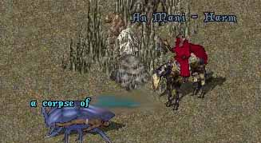
こんなSS乗せてますけど。
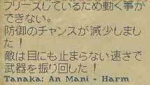
必死でした。（相手は堀師さん）
そういえば、まだ霊話GMじゃなかった。
そゆことで、スキル上げ。
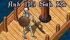
ほんと、だるいです。
スキルGM以上とか今時、当たり前言ってますけど、
船で「あみさかｓｋ・・」って言ってるのをじーっと見てるような
ネットゲームをしてない人が見たら、気持ち悪い行為が当たり前になってるんですよね。
そんな愚痴を言いつつも。
連鎖キター
なんか、北斗シャードって北に8歩なんですかね。
南に8歩やるより効率がいいような気がします。
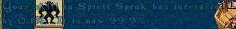
９９．９！！！
何度やってもこの瞬間は気持ちいいものです。
さー、GMゲットですよー。
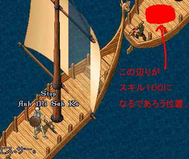
あんまりUOで激怒しないタイプなんですけどね。
スーパーハッカーの友達に頼んで、この船の持ち主のリアル家探し出してピンポンダッシュしてやりたい。
まあ、でもがんばって。
（｀∵´）
うれC。
霊話GMになると、何が出来るか。
ネクロ呪文のダメージとかはどうでもいい。
・死んだ人の言葉が聞こえる。
（堀師さんの「まじ、うｚeeeeeeee」等の言葉もダイレクト。）
・自分が死んでも会話が出来る。
（哀れみを請う台詞を言って、蘇生してもらえて、れすきるしてもらえる。）
まあ、そうなると死にたくなりますよね。
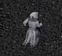
いや。
普通にPKKされただけなんですけどね。
せっかくなので幽霊散歩。
幽霊で、有意義な使い方は何ですか？
そう聞かれたら大抵の廃人は、こう答えるでしょう。
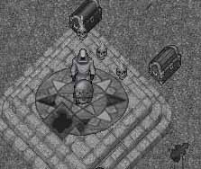
Yes！幽霊偵察！！
「あー、こちら偵察でヤンス。いまのところ異常無しでヤンス。」
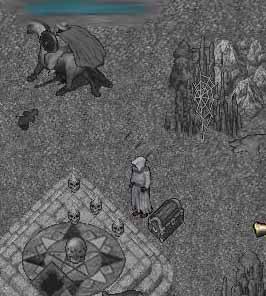
「あー、こちら偵察でヤンス。青３ほどで進めはじめたでヤンス。」
報告する友達とかいないところがネック。
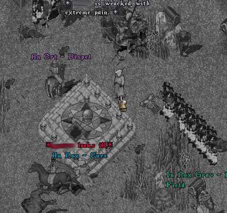
「なんか盛り上がってるでヤンス。」
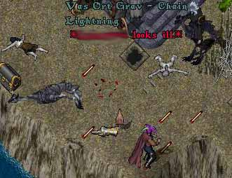
「青、全滅でヤンス。」
（せっかくなので表示「にわとり」にしてカラー表示）
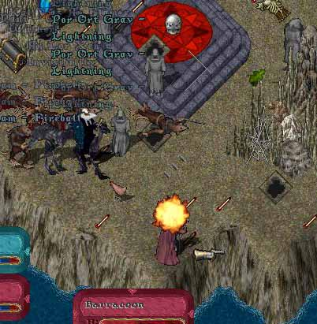
「青３、うらめしそうに見てるでヤンス。まさにうらめしや、でヤンス。」
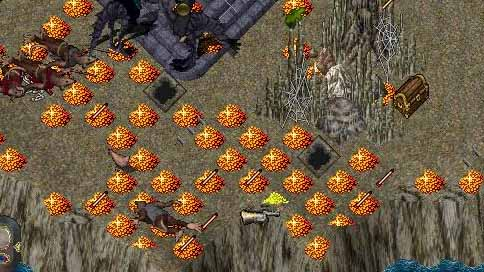
「お金拾いたいでヤンス。でも、死んでるのでそれは出来ません！とか突っ込み入るでヤンス。」
まあ、そんなのはどうでもいいんですよ。
私は宇宙に行きたかったんです。
宇宙の美しさを見て、この汚れた心を見つめなおしたかった。
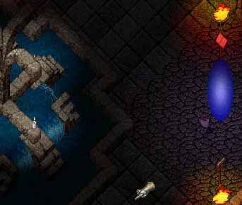
よく見えない。
んで、やっぱり宇宙なのでたくさん人が殺しあってる。
逃げる人、追いかける人。
とてもUOを楽しんでいて、うらやましかった。
でも、私は幽霊だし、何もすることが出来ない。
いや・・・・・。
私の得た力。
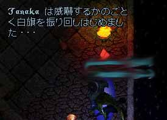
sayマクロ発動。
これやると、あせって馬から下りたりしてる人がいて楽しいです。
これ見た上の方が。
「何、そのマクロｗ」
気づいて話しかけてくれた。
しかも。
「あ、田中さん。日記みてますよ。」
うぉぉ。うれC。
でも
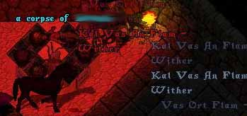
それが最後の言葉になった。
（通りすがりのPKさんに殺されてた）
ごめんなさい。ゲート、一回入ってたのにね。
まあ、UOの中じゃよくあること、気にしないで遊んでた。
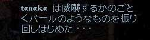
バールのようなものも振り回したり
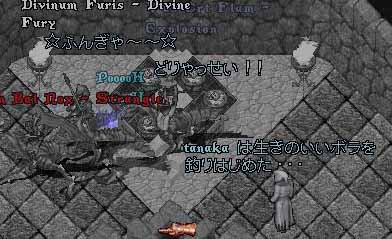
すんごい戦ってる横で釣りしたりしても、
たまにノリドラから降りたりしてる人いて面白かった。
私は楽しかったんですけど
すんごい、邪魔でしたね。ごめんなたい。
さっきの亡くなった方が
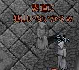
「素直に鉱山にいないからｗ」
（こんな所に来るから殺されるんですよ）
アドバイスもらったけど、死んでから来たんですよ！
生身の体でこんなとこ、来れません。
話は変わりますけど。
UO内で新しいゲームが流行ってるそうです。
詳しい内容はこちら→無断リンク←なんか、すんごい面白そうです。
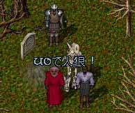
UOで人狼！！
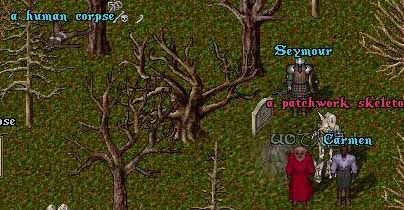
1日目：村人A、通りすがりのオーガに殺される。
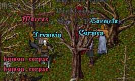
２日目：赤NPCが襲って来るので殺す。
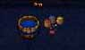
ついでに服染めて
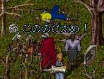
暴言。
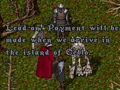
3日目：村人Bがオクローに逝きたがる。
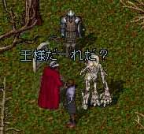
４日目：誰もルールを知らないことに気づく。
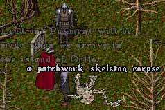
５日目：村人D、時間切れにて死亡。
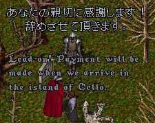
６日目：村人C､解雇。
なんか、私はよくわかりませんけど面白いらしいですね。
<<おまけ>>
UOトリビア
赤ネームで雇用NPCを雇い、解雇すると
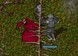
逆切れする。
へーへーへー
おしまい。